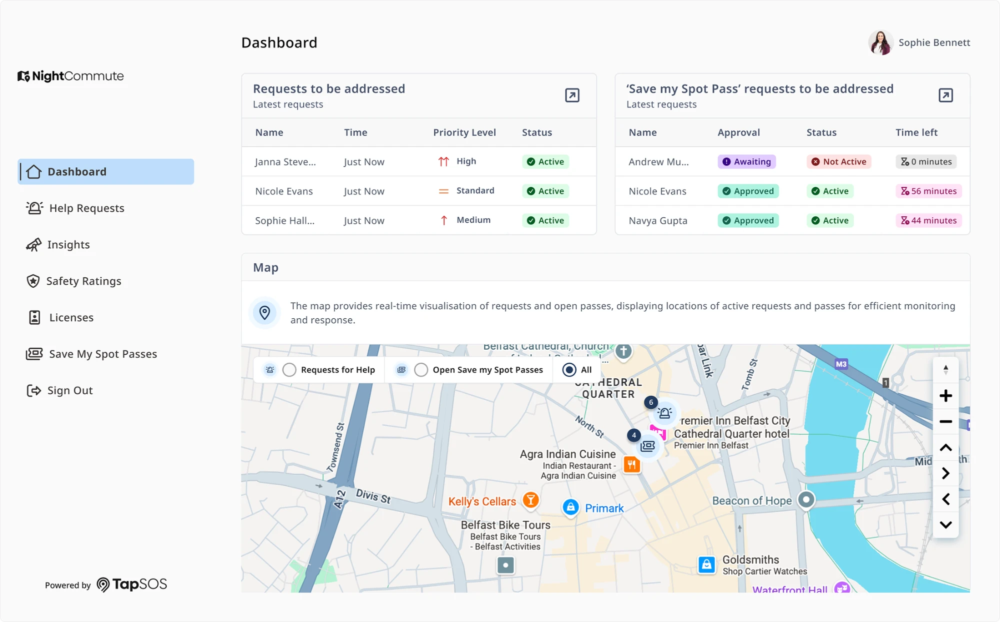

Case studiesNightCommute
NightCommute Helping women and girls navigate safely from A to B
A mobile experience and staff dashboard that help people feel more confident travelling alone at night, focused on reassurance before anything goes wrong.
- Role
- End-to-end UX and UI
- Company
- Inclutech
- Year
- 2025–26
- Platform
- Mobile app and web portal
- Piloted in
- Belfast, April 2026

01Overview
Confidence from departure to arrival
NightCommute is a mobile app designed to help people feel more confident when travelling alone at night. Rather than waiting until an emergency occurs, the experience focuses on prevention: helping users plan safer routes, stay connected with trusted contacts, and feel reassured throughout their journey.
The project explores how thoughtful interaction design can reduce anxiety without overwhelming users with unnecessary complexity, creating an experience that supports confidence from departure through to arrival.
02Challenge and solution
Feeling secure before something goes wrong
For many people, travelling home after dark involves making conscious decisions to feel safer: sharing live location, calling a friend, changing routes, or avoiding certain areas entirely. While emergency safety apps provide support during critical situations, fewer products focus on helping users feel secure before something goes wrong.
The challenge was to design an experience that supports independent travel while balancing reassurance, privacy, and simplicity.
The solution
NightCommute combines journey planning, live location sharing and proactive safety features into a single experience designed around reassurance rather than reaction.
Every interaction was intentionally lightweight, allowing users to remain aware of their surroundings while still feeling connected to the people who matter most.
Success criteria
Can a user, without help:
- Create a journey and share it with a trusted contact
- Check in at a venue
- Rate a venue’s safety
- Request support from venue staff
03Research and discovery
Reassurance mattered as much as emergency response
Research began by exploring existing personal safety applications alongside user behaviour and common safety practices. Competitor analysis highlighted that many products centred around emergency response, while conversations with users suggested reassurance before and during a journey was equally important.
Key research insights
To better understand the context surrounding night-time travel, I explored publicly available research into personal safety, travel behaviour and the experiences of women and girls across Belfast and Northern Ireland. While public transport is generally regarded as safe, research consistently highlights a significant difference in how safe people feel when travelling alone after dark, particularly women and girls. These insights helped shape the direction of the project and reinforced the importance of designing for reassurance, confidence and accessibility.
27%
of women in Northern Ireland felt safe after dark in a park or open space.1
68%
of men said the same, a gap of more than 40 points.1
Women consistently report feeling less safe after dark than men, particularly in parks, open spaces and city environments.
Source: 1. The Executive Office, Ending Violence Against Women and Girls: Experiences and attitudes of adults in Northern Ireland in 2024.


04A two-sided process
Designing beyond the individual user
Establishing a user-to-user process
While the primary focus of NightCommute was supporting people travelling alone, the experience also needed to consider those responding on the other side. Whether a report is received by venue staff, security personnel or emergency services, the information must be clear, actionable and delivered in a way that enables a fast, informed response.
Mapping the reporting journey
Early in the discovery phase, I mapped the end-to-end reporting journey to understand how information should flow between the person raising a concern and the individual responsible for responding. This helped identify what information was essential at each stage, how reports should be prioritised, and where opportunities existed to reduce unnecessary friction for both users.
- Public user
- Report submitted
- Staff dashboard
- Action and resolution
By considering both perspectives from the outset, the product evolved into more than a reporting tool. It became a connected experience that supports communication, improves situational awareness and enables faster decision-making when it matters most.
05Ideation and development
From the full journey to a streamlined flow
Early concepts focused on mapping the complete user journey, from planning a route through to arriving safely home. Multiple navigation structures and interaction patterns were explored before refining the experience into a streamlined flow that reduced unnecessary decision-making.
Wireframes allowed key journeys, including route planning, live tracking and emergency actions, to evolve quickly before moving into higher-fidelity designs.


06Design and styling
Confidence, not urgency
The visual language was intentionally minimal, using clear layouts, generous spacing and restrained colour to create a sense of confidence rather than urgency.
A combination of accessible typography, recognisable iconography and consistent interaction patterns allows users to complete important tasks quickly while maintaining focus on their surroundings.
Every design decision was guided by the principle that the interface should support the journey without becoming a distraction.


07Pilot findings
Putting NightCommute on Belfast’s streets
A real-world pilot in Belfast, April 2026, combining post-pilot questionnaires with product analytics.
To test the app beyond the studio, NightCommute was piloted in Belfast with a small group of participants who used it while out in the city. I ran the analysis myself, reading the questionnaire responses alongside funnels, session replays and error data, then turned the findings into design recommendations for the next release.
What people told us
9 in 10
Safer in the city centre
said they would feel safe in Belfast city centre at night using the app, far more than feel safe there today.
100%
Safer anywhere at night
said they would feel safe when out and about at night if they were using the app.
100%
Would use it and recommend it
said they were likely to use the live app, and to recommend it to a female friend or family member.
#1
Journey sharing led the way
Creating and sharing a journey with a trusted contact was the feature participants valued most for their safety.
“I think the features have been carefully curated with what women and girls want.” Pilot participant
Where people got stuck, and what I recommended
The analytics told a more honest story than the questionnaires alone. People valued the idea, but many didn’t find their way through core tasks, like creating a journey or asking venue staff for support, without help. I grouped what I found into three themes, each with a design response.
- Clear onboarding
- People were unsure how to start a journey, check in or share their location. A “take a tour”, tooltips and step-by-step guidance for first use.
- Shorter flows
- Too few people completed the key journeys. Every core flow cut to two or three steps, with fewer inputs and a progress indicator.
- Clearer structure
- Features felt scattered and “awkward”. Related features grouped together so the app flows the way people think.
08Reflection
Balancing reassurance with simplicity shaped every decision.
NightCommute demonstrates how proactive safety features can be integrated into a calm, approachable mobile experience. By shifting the focus from emergency response to everyday reassurance, the project explores how digital products can help users feel more confident travelling alone.
This project challenged me to design beyond individual screens and think about the emotional experience of travelling alone. Balancing reassurance with simplicity became a recurring design consideration throughout the project, influencing everything from navigation to visual hierarchy.
The pilot was the most valuable part. Seeing people who believed in the product still struggle to complete a journey showed me that confidence comes from clarity, and that analytics and conversations are strongest together.
Next project
TapSOS
An accessible, non-verbal way to contact the emergency services.
View case study